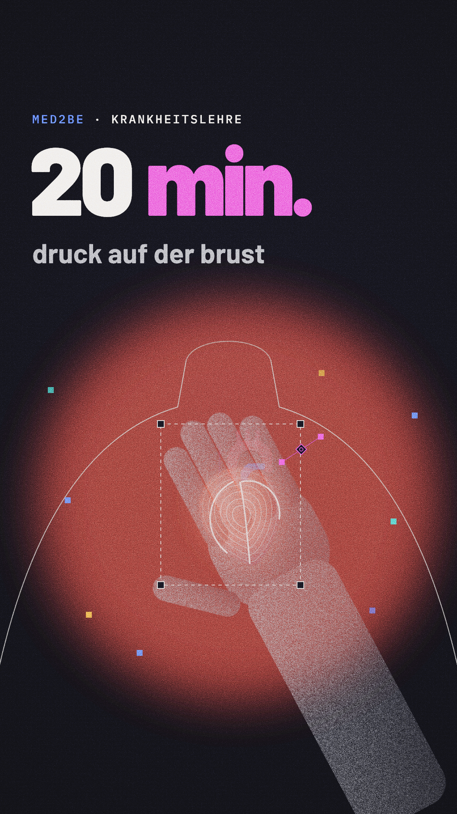
„Druck auf der Brust. Seit zwanzig Minuten.“
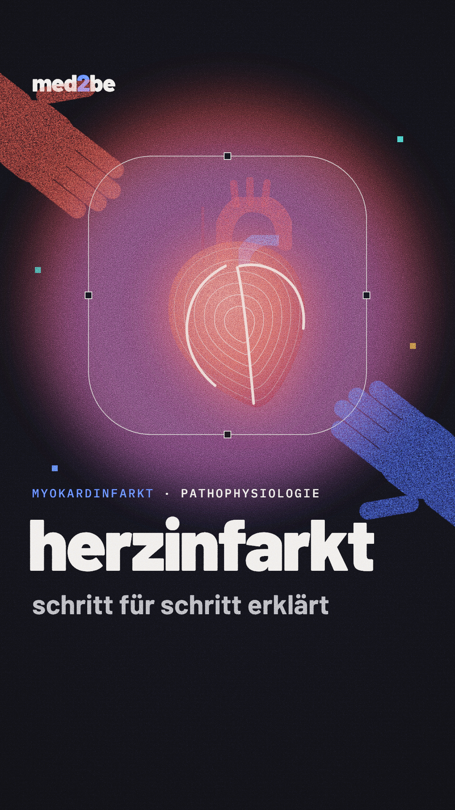
„Das ist ein Herzinfarkt: Herzmuskel stirbt, weil ihm Sauerstoff fehlt.“
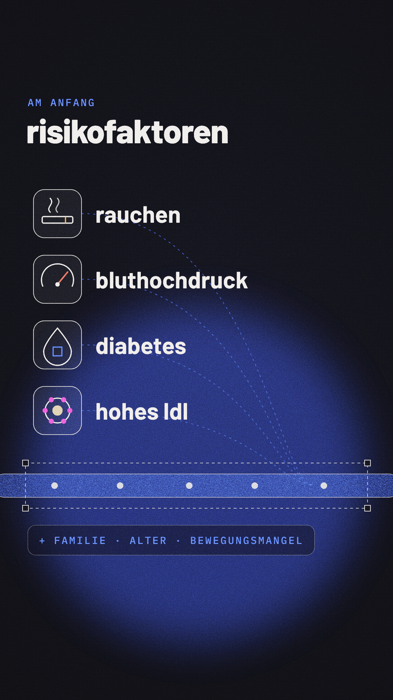
„Am Anfang stehen Risikofaktoren: Rauchen, Bluthochdruck, Diabetes, hohes LDL.“
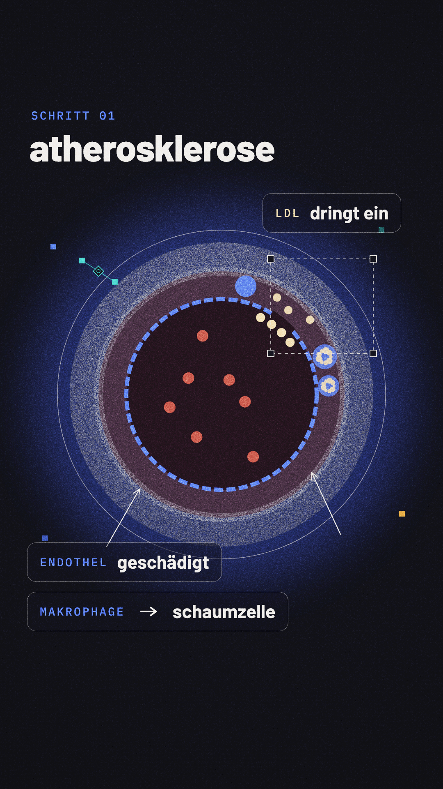
„Schritt eins: Das Endothel wird geschädigt. LDL dringt in die Gefäßwand, Makrophagen fressen es – und werden zu Schaumzellen.“
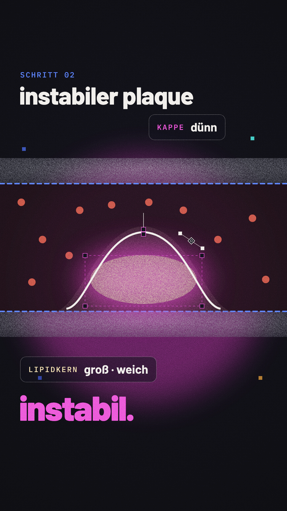
„Schritt zwei: Ein Plaque wächst – weicher Lipidkern, dünne Kappe. Instabil.“
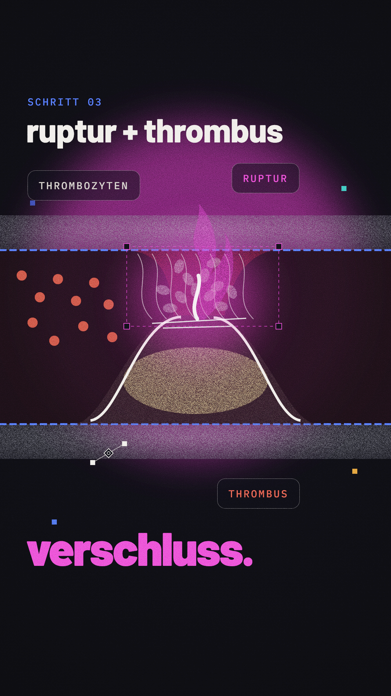
„Schritt drei: Die Kappe reißt. Thrombozyten lagern sich an – ein Thrombus verschließt das Gefäß.“
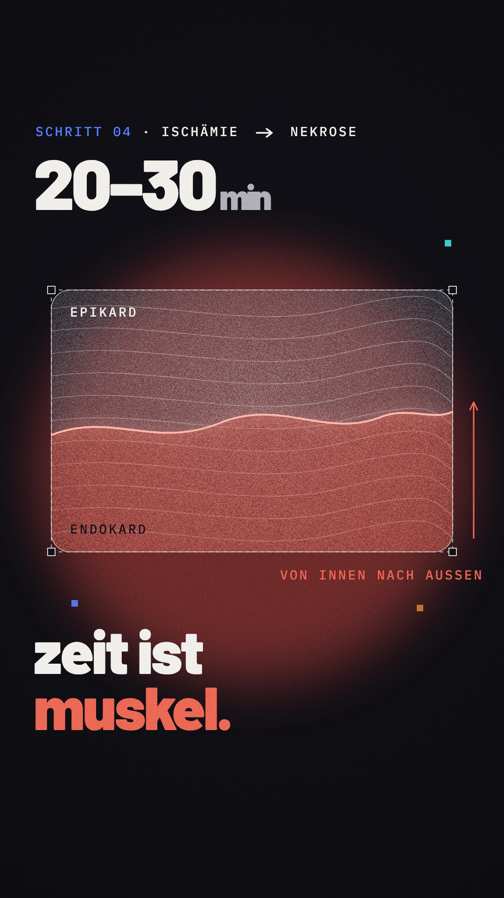
„Schritt vier: Ohne Sauerstoff sterben nach zwanzig bis dreißig Minuten die ersten Zellen – von innen nach außen. Zeit ist Muskel.“
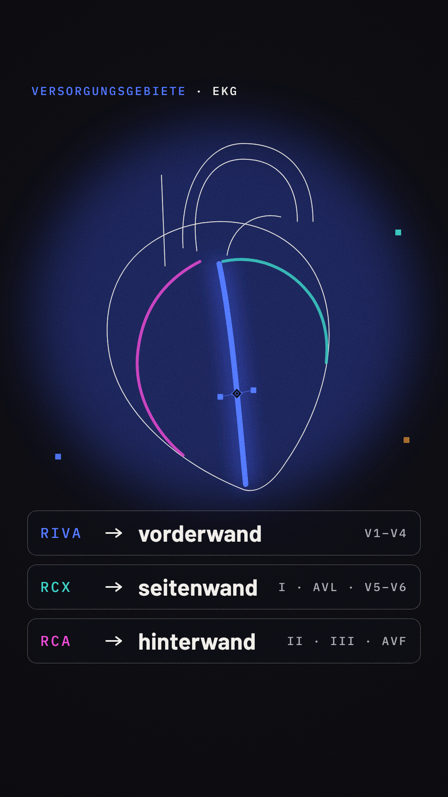
„Welche Wand betroffen ist, verrät das Gefäß: RIVA – Vorderwand. RCX – Seitenwand. RCA – Hinterwand.“
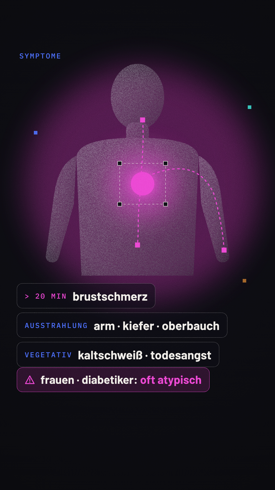
„Typisch: Brustschmerz, ausstrahlend in Arm, Kiefer oder Oberbauch. Kaltschweiß, Todesangst. Achtung: Frauen und Diabetiker oft atypisch.“
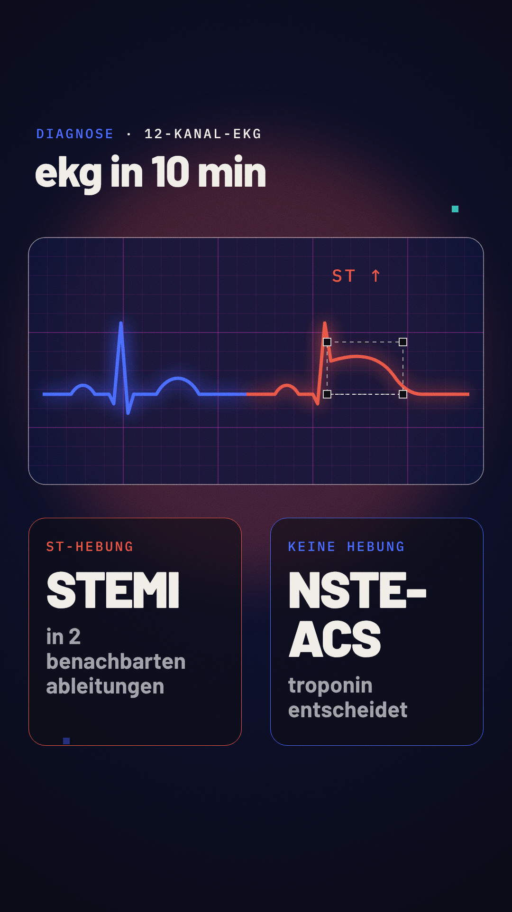
„Diagnose: EKG in zehn Minuten. ST-Hebung in zwei benachbarten Ableitungen – STEMI.“
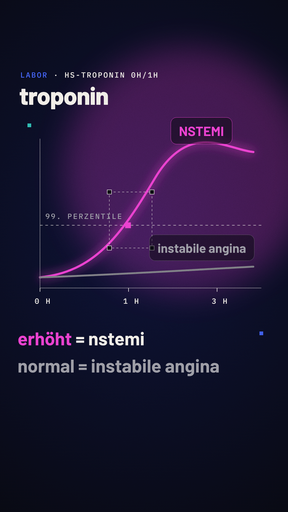
„Keine Hebung? Dann entscheidet das Troponin: erhöht – NSTEMI. Normal – instabile Angina.“
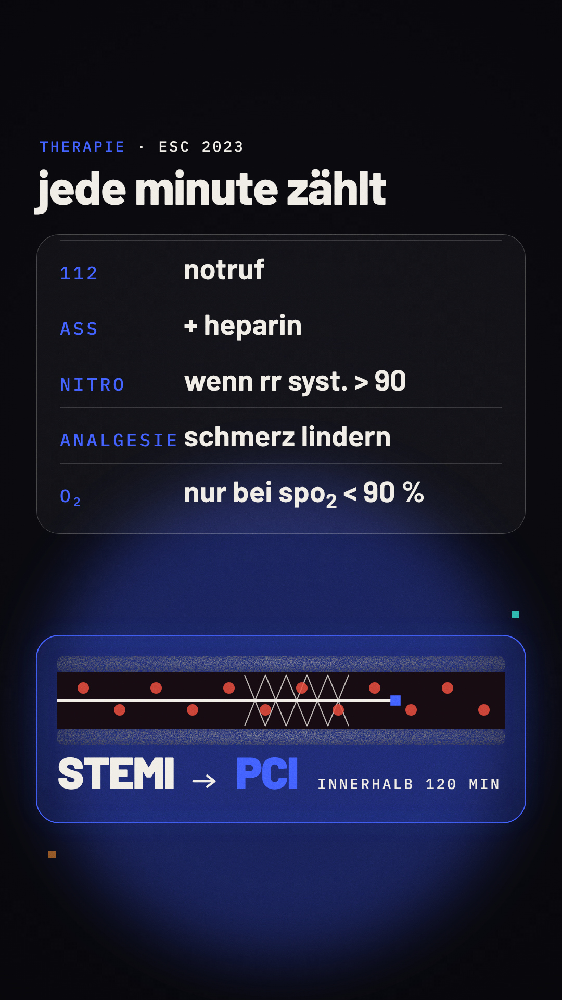
„Therapie: Notruf, ASS, Heparin, Nitro, wenn der Blutdruck reicht. Sauerstoff nur bei einer Sättigung unter neunzig Prozent. Beim STEMI: Herzkatheter, innerhalb von zwei Stunden.“
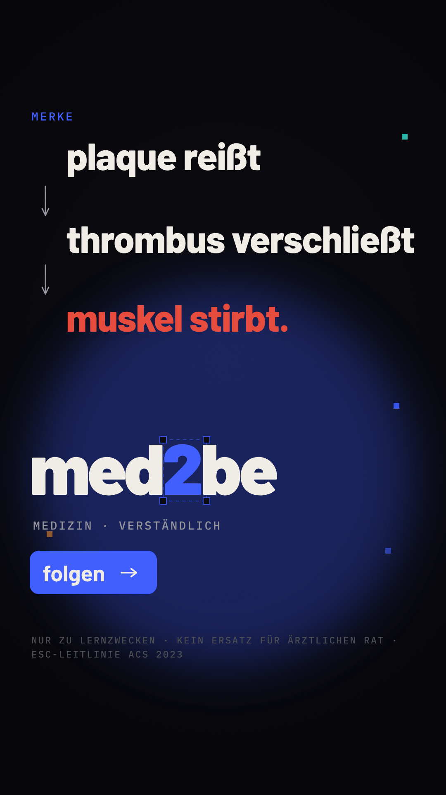
„Merke: Plaque reißt, Thrombus verschließt, Muskel stirbt. Folge med2be.“